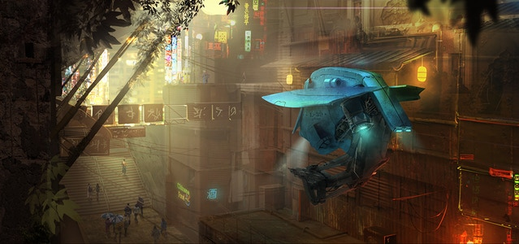

So here is a story for you. A few years ago, after I left my career in Silicon Valley, I decided to break bad 😂. I know, it sounds silly, but hey, I had fun. I spent almost two years being a full-time traveler (part-time remote-located engineer and part-time having-so-much-freakin-fun).
Here is my top drone videos from those wild times:
1. Hawai’i Aerial Reel
Living in Hawaii for almost 5 months in 4 different occasions freed my soul for good (whatever this means).
The droning in this "reel" is so so beautiful, and it was so much fun to film.
I will never forget those days 💖.
2. Life is all about you & Not at all about you
I just love this song by Zhu. I can listen to it over and over.
But the droning in this video is also really special to me because it was my first summer in SoCal 🌴.
3. Santa Monica Daze
S-O M-U-C-H F-E-E-L-Z.
I can't even.
4. Tiny Jaws
I always really wanted to go to Maui, it was itching.
So I took two weeks off my job at Surfline in Huntington Beach and just travelled to a random hostel in Lahaina.
It turned out that I was on the other side of the island from Jaws, which was the place I really wanted to drone.
I longboarded for hours with my drone in my backpack and a killer hot sun on my face.
I almost died to find the place but it was soooo worth it 😎.
5. Surf & Chill in Malibu
Malibu :).
Thank you & Godspeed, Z.
PS: I had a website miasteinkirch.com once and this was the opening (and 3k people loaded it? Waaaaat!)
6. Haleiwa Dreams
One of the best days of my life was when I was living in Haleiwa.
Everything was magical and colorful.
Surfing was so tight.
This video is actually called mia's dreams ✨
7. Longboarding Haleiwa
OK, the surf sucks because there were no waves but this video still gives me the chills.
I was 100% happy and this is not easy as a human in 2018.
Plus, Post Malone wrote this song for me. ☠️
8. Go Skateboarding Day w/ Sierra Prescott
So I met this crazy good and famous LA local skateboarder and we hung out 🐰.
Good summer times with some badass LA gals.
Bonus: These ones are just hilariously bad and good, I don't know 🤷🏼♀
It’s Summer in the Pipe!
Surfing Venice Beach
Skateboarding the Pipeline
Skateboarding Poods
Wake up High in Encinitas
I dunno, have fun, work hard, be yourself, and stay rebel? 🤘🏼
Aloha, bt3